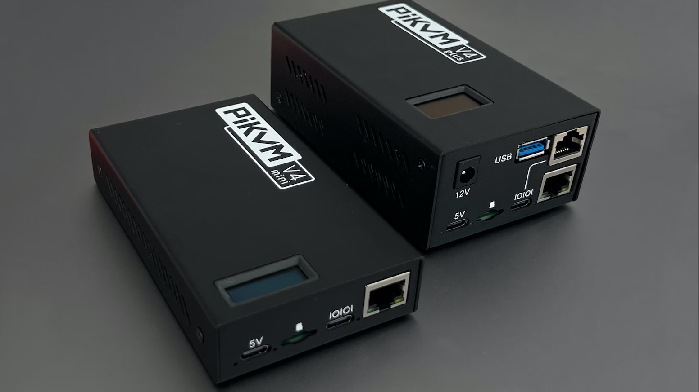
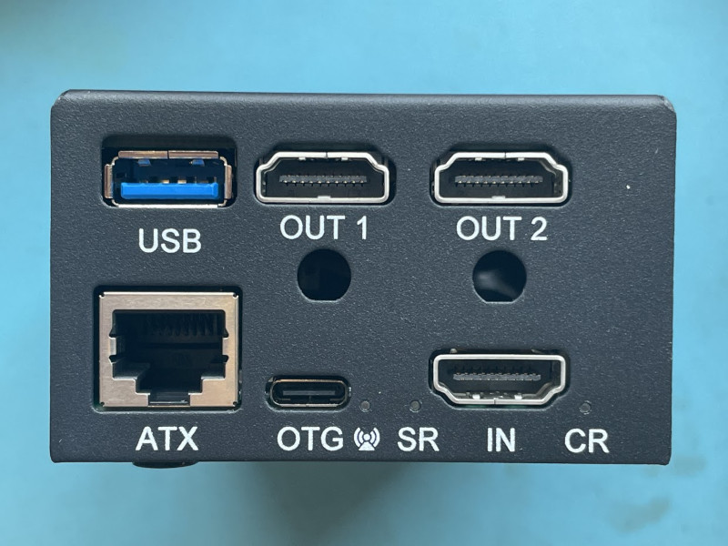
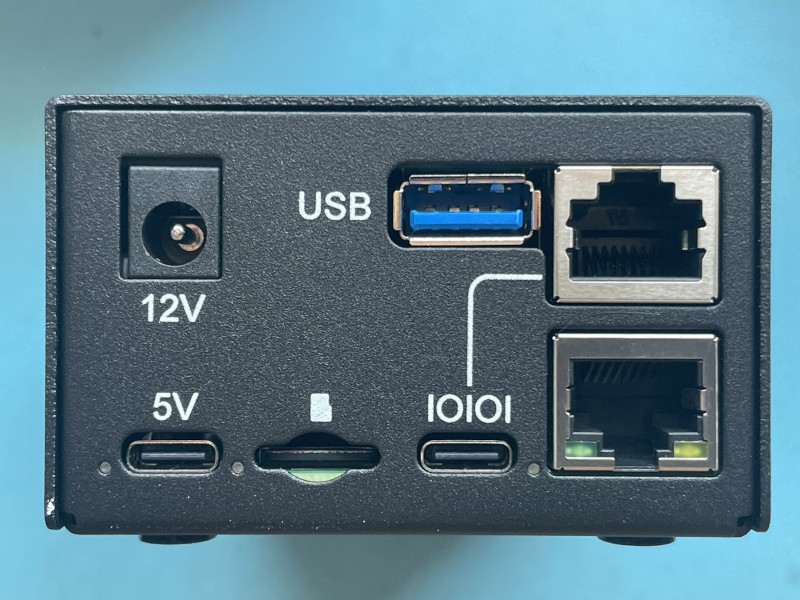
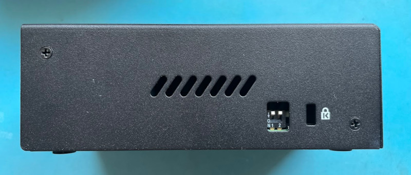

PiKVM V4 Mini & Plus¶

Installation requirements¶
- PiKVM V4 Mini or Plus box kit.
- Any reliable HDMI cable.
Basic setup¶
-
Unpack the box and connect the PiKVM according to diagram:
Back side Front side   -
HDMI input (the bottom right on the back side) and OTG port (USB emulation) should be connected to the computer. Optionally, the ATX port can be connected to control the power. There should be no USB hub between PiKVM and the computer, as some UEFI/BIOS cannot detect them at the boot stage.
-
Connect Ethernet (bottom right on the front size) to the network using the cable from the kit. The kit includes two Ethernet cables of different colors: one for the network, the second for ATX. Use whichever one you like best.
-
Use the power supply and turn on PiKVM. The Mini comes with USB-C 5V power supply, and Plus with Barrel 12V. Use the appropriate connector on the front side. Please note that Plus can also work from 5V, in this case, do not connect a 12V power supply and don't create a significant power load on USB (external flash sticks, cameras, and so on).
Warning
Do not block the ventilation holes on the sides of the device. This is especially important for the V4 Plus, which has an active cooling.
-
-
Wait until PiKVM starts and shows a greeting on the built-in display. Do not turn off the device until it's fully booted for the first time.
-
Carefully read and follow the "First steps" guide - how to find PiKVM on the network, how to log in there, change passwords, and so on.
Follow the steps described there and come back to this page. -
Using Fahrenheit instead of Celsius on the OLED
Create file# mkdir -p /etc/systemd/system/kvmd-oled.service.dtouch or nano /etc/systemd/system/kvmd-oled.service.d/override.conf:And run[Service] ExecStart= ExecStart=/usr/bin/kvmd-oled --clear-on-exit --fahrenheitsystemctl restart kvmd-oled. In some cases, if you still do not see Fahrenheit being displayed, reboot the device. -
Just reminding again:
✮ ✮ ✮ CHANGE THE PASSWORDS! ✮ ✮ ✮
PiKVM comes with the following default passwords:
- Linux admin (SSH, console, etc.): user
root, passwordroot. - PiKVM Web Interface (API, VNC...): user
admin, passwordadmin, no 2FA code.
These are two separate entities with independent accounts.
To change passwords, you will need to use the console access via SSH or the Web Terminal. If you are using the Web Terminal, enter the
su -command to get therootaccess (enter therootuser password).[root@pikvm ~]# rw [root@pikvm ~]# passwd root [root@pikvm ~]# kvmd-htpasswd set admin [root@pikvm ~]# roIf you require additional user for the Web UI access, use the following:
[root@pikvm ~]# kvmd-htpasswd set <user> # Set a new user with password or change of an existing one [root@pikvm ~]# kvmd-htpasswd del <user> # Remove/delete a userOptionally you can enable the two-factor authentication for more security.
Changing the VNCAuth passkey and IPMI password at the first start of PiKVM is not required, since these services are disabled by default. But it is here just so that you remember their existence.
- Linux admin (SSH, console, etc.): user
-
Try to manage the computer using PiKVM with the Web Interface.
Make sure that you get an image and both keyboard and mouse are working. If something doesn't work, check out our FAQ (it's really useful). If nothing helped, you can get support in our Discord chat. -
Configure access to PiKVM from the Internet using port forwarding or Tailscale VPN, if you need it.
-
Explore the features of PiKVM using the site's table of contents and have fun!
Video modes¶
Both PiKVM V4 Mini and Plus devices support a resolution 1920x1200, however, for compatibility reasons, the default configuration uses 1920x1080. To enable 1920x1200, follow this guide.
ATX connection¶
DIP switches¶
There is a pair of DIP switches on the V4 right side. It is not recommended to change their state while the device is turned on.
| Right side |
|---|
|  |
-
The left switch [1]. When pulled down (ON state), the advanced backpower protection is used. On the default state is OFF (up), "diode protection" is used. This is required for debugging at the request of technical support. Under normal conditions, it is not necessary to change the mode.
-
The right switch [2]. When pulled down (ON state), the Power Delivery chip is activated on the USB OTG port. The default state is OFF (up).
Wi-Fi antenna¶
The PiKVM V4 has a robust metal case that protects your device from physical damage and electromagnetic interference. This also means that an external antenna must be used for Wi-Fi. We recommend the official Antenna Kit for Raspberry Pi.
To install the antenna, fix it in the round hole in the back side of the PiKVM, and connect the wire to the connector on the Compute Module 4, as described in the instructions.
Next, to activate the antenna, add line dtparam=ant2 to the /boot/config.txt file on PiKVM.
Follow this guide to configure Wi-Fi in PiKVM OS.
Internal USB on V4 Plus¶
The V4 Plus has an internal USB port that can be used at your discretion. It supports USB 3.0, but by default it only works with USB 2.0 devices due to energy savings. To enable USB 3.0, it is required to flash the USB controller firmware. It's very easy:
- Install the package
flashrom-pikvm:# rw # pacman -Syu # pacman -S flashrom-pikvm - Flash the firmware:
usb3for USB 3.0 support, ordefaultfor the default USB 2.0-only firmware:# flashrom-vl805 usb3 - Perform the soft reboot:
# reboot - After the soft reboot, perform reboot by power (unplug and plug again the power cable).
Known issues and limitations¶
- The actual frame rate of the image received via HDMI will depend on the network bandwidth, resolution and the load on the Raspberry Pi. This is usually ~24-28 FPS for 1080p over LAN.
- There may be compatibility issues with some motherboards (such as HP or DELL) which are the same as those that exist with PiKVM V2. Not everything is perfect, but if you have already used PiKVM V2 - our new V4 will work great and please you. If there is no image from the BIOS, you can fine-tune the HDMI settings, but it is possible that the Mass Storage devices will not be available in the BIOS.